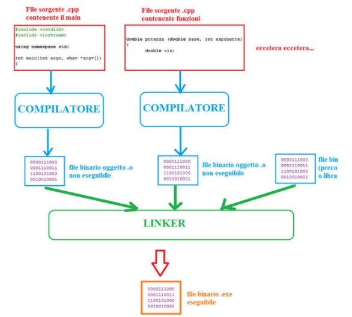
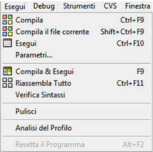
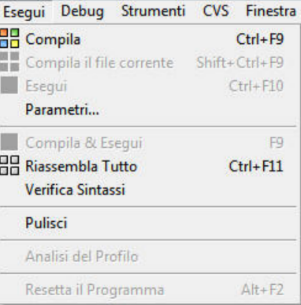

Fase di sviluppo di un programma
Dal file sorgente al file eseguibile
La generazione di un programma inizia con la scrittura di un file sorgente in un qualche linguaggio
di programmazione (es. C++) e termina con la creazione di un file eseguibile (cioè di un
programma in linguaggio macchina che può essere eseguito direttamente dal computer).
Le fasi necessarie sono schematizzate in figura:

Il significato dei diversi blocchi in figura è il seguente:
1. il file sorgente è un file di testo con estensione .cpp contenente il programma scritto in C++.
2. il compilatore effettua la traduzione dal linguaggio ad alto livello al linguaggio macchina,
generando un file oggetto (con estensione .o). Tale file non è ancora eseguibile dal computer
poiché contiene solo una parte del codice finale (per esempio solo una funzione oppure solo il
main.
3. il linker effettua l'assemblaggio dei diversi file oggetto per generare un unico file eseguibile.
Il progetto (project) in dev-C++
In dev-C++ un progetto (project) è un file con estensione .dev che contiene le regole per la
costruzione di un file eseguibile.
Tali regole devono specificare:
-il tipo di eseguibile che si vuole creare (windows application, console application...);
-i file che devono essere linkati insieme per creare l'eseguibile.
Si noti che fra i file da linkare dev'essere presente solo un unico programma main. Gli altri file
devono eventualmente contenere le funzioni che il programma utilizza.
Compilazione e linking in dev-C++
Come già abbiamo visto il dev-C++ è un ambiente integrato che contiene al proprio interno tutti gli
strumenti necessari per creare un programma e in particolare contiene:
-un editor di testo per scrivere file sorgenti in C++
-un compilatore per tradurre i file sorgenti e generare file oggetto
-un linker per assemblare insieme più file oggetto e creare un eseguibile.
Gli strumenti di compilazione, linking ed esecuzione sono accessibili dal menu Esegui, come mostrato in figura:

Il significato delle diverse opzioni è il seguente:
1. Compila: compila tutti i file sorgente presenti nel progetto generando i corrispondenti file oggetto con estensione .o (senza linkarli).
2. Compila il file corrente: come la precedente, ma compila solo il file correntemente selezionato.
3. Esegui: esegue il file exe (se precedentemente generato) senza ricompilare e linkare nuovamente i file.
4. Compila & Esegui: esegue la compilazione e il linking dei file che fanno parte del progetto (solo se sono stati modificati), genera l'eseguibile e lo manda in esecuzione.
5. Riassembla tutto: rigenera l'eseguibile (senza lanciare l'esecuzione), indipendentemente dal fatto che ci siano state modifiche o meno.
6. Verifica Sintassi: come suggerisce il nome, verifica se ci sono errori senza però compilare e generare nessun file
Un caso particolare: linkare un file oggetto precompilato
Un caso particolare interessante è la possibilità di includere in un progetto non solo file sorgenti (con estensione .cpp) ma anche file oggetto (.o) precedentemente compilati.
In altre parole è possibile per esempio usare nel proprio progetto un file contenente funzioni di cui si dispone solo della versione compilata, senza avere accesso al file sorgente. Ciò è utile per esempio quando si vuole condividere le proprie funzioni con altre persone, senza però dare a queste ultime l'accesso al proprio file sorgente (in sostanza si vuole che altri possano usare le nostre funzioni senza però poter vedere come sono state scritte).
Per includere file oggetto in un progetto bisogna accedere alle opzioni del menu progetto (Progetto/Opzioni del Progetto) e quindi alla scheda Parametri. Con il pulsante Aggiungi libreria o oggetti è infine possibile cercare i file .o e aggiungerli al progetto:

Creare una library di funzioni
Un modo un po' più efficiente ed elegante per distribuire il codice delle proprie funzioni (senza rendere accessibile il sorgente è quello di creare una library).
1) Per fare questo basta creare un nuovo progetto e scegliere l'opzione Static Library come in figura (il nome funz_binarie è un esempio):

2) A questo punto bisogna aggiungere al progetto tutti i file sorgenti .cpp che contengono le funzioni che dovranno fare parte della library. Per esempio:

3) Infine bisogna compilare la library col menu Esegui (che in questo caso non contiene le opzioni
Esegui e Compila & Esegui perché una library è una collezione di funzioni, senza un main e non può
essere eseguita direttamente)

4) Scegliendo dal precedente menu l'opzione Compila o Riassembla tutto viene generato un file con
estensione .a (nel nostro caso si chiama funz_binarie.a) contenente al proprio interno tutte le
funzioni dei file caso.cpp e inpout.cpp.
5) A questo punto il file di libreria può essere utilizzato in un nuovo progetto con le stesso modalità
viste sopra in Linkare un file oggetto precompilato (basta selezionare il file .a nella scheda Parametri
delle Opzioni del Progetto).
A questo punto il file di libreria può essere utilizzato in un nuovo progetto con le stesso modalità
viste sopra in Linkare un file oggetto precompilato (basta selezionare il file .a nella scheda Parametri
delle Opzioni del Progetto).
Rispetto all'uso di semplici file oggetto, le library sono raccolte di funzioni con un indice di accesso
che, in teoria, permette un accesso più veloce alle funzioni stesse. Questo era particolarmente vero
nel caso dei vecchi linker i quali, nel caso di file oggetto, linkavano tutte le funzioni contenute
nell'oggetto, indipendentemente dal fatto che esse fossero usate o meno dal programma. Con i
programmi linker moderni invece le funzioni vengono aggiunte all'eseguibile solo se effettivamente
usate (e questo accade sia con il file oggetto che con le library).
In buona sostanza non esiste più molta differenza pratica fra usare file precompilati o library
statiche in dev-C++.